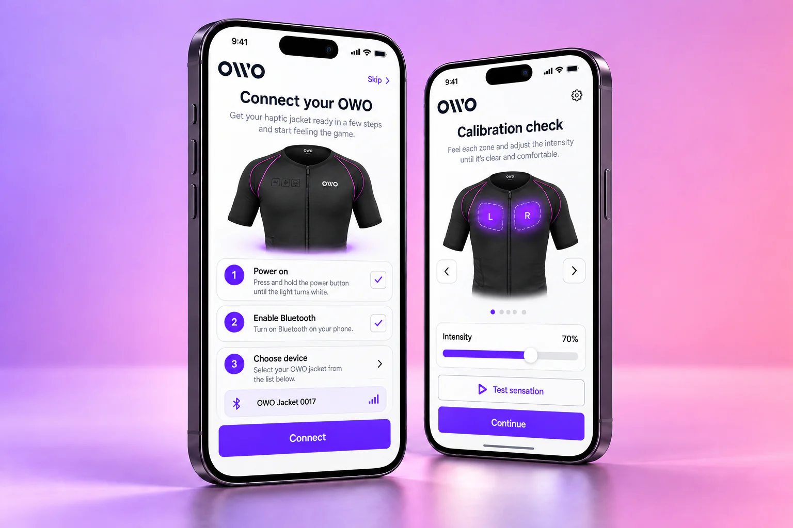

Learn with real users
I invested substantial work in the onboarding, using usability tests with clients to understand where explanations and interactions needed refinement.
OWO
An app that connects and calibrates a haptic jacket. The interface has to make an unfamiliar physical experience understandable before the game even begins.

There were few comparable applications to use as a reference. Connecting hardware was only part of the challenge: people also needed to understand calibration and feel confident using a new kind of product.
I invested substantial work in the onboarding, using usability tests with clients to understand where explanations and interactions needed refinement.
The interface connects sensation settings to a visual representation of the jacket and individual muscle areas, with clear controls for adjusting and testing intensity.
Connection status, calibration profiles and the sensations library sit within the same product experience, helping people move from configuring their jacket to playing.
Designing for unfamiliar technology meant building understanding as carefully as the interface itself. The onboarding became an essential part of the experience.